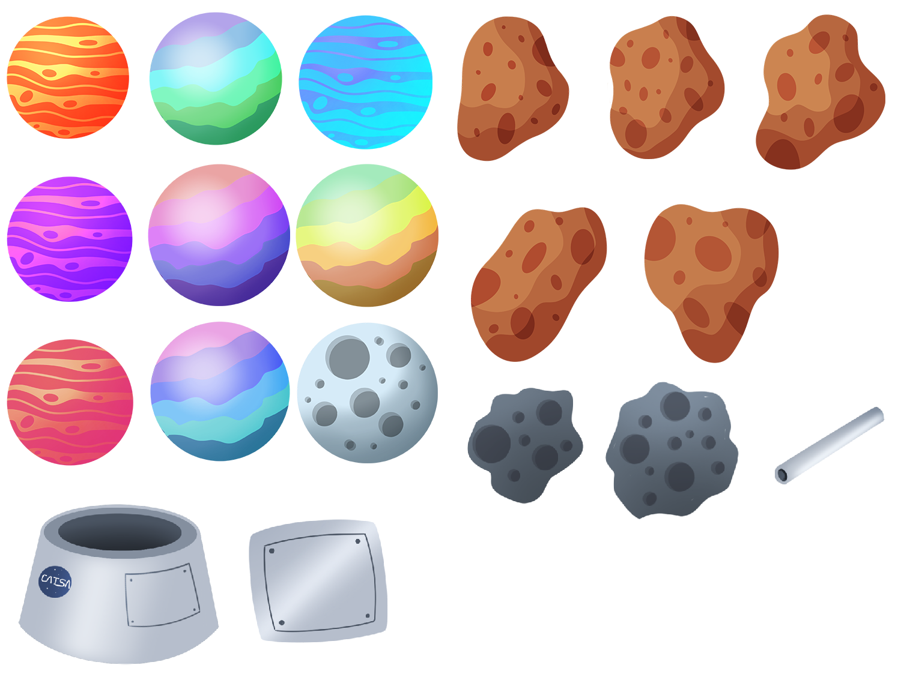

A fearless knight running through the dangers of an endless dungeon.
UNITY
C#
Catronaut is a game about my cat Marty floating endlessly through space. The premise is that Marty is on a mission through space when her spaceship is hit by an asteroid. She is now stranded in the vastness of space with a broken thruster and must survive for as long as possible.
One of the first things I coded for this was the movement mechanic. I wanted this game to be challenging and the movement was going to be the highlight for that. In this case. the player will keep going in a counter-clockwise circle. Tapping and holding on the screen will start rotating the player in a clockwise motion. This way, the user is meant to move forwards by tapping the screen and going in a wiggly motion.
Another feature of this project is random obstacle generation and object pooling. There are several different obstacles that are prefabbed and spawned into the map randomly.
For the planets, they are spawned on the top and bottom edge of the screen and will alternate. This leaves much room in the center of the screen to traverse the map. Here, we spawn in the asteroids and debris. Each of these are spaced out by spawning after 2x the width of the previous obstacle. This way, the player has enough room to squeeze through.
Lastly, this project is integrated with Google Play Services for keeping track of the highscore. This is a hyper-casual game with the goal to score more than your friends.